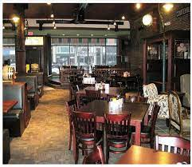
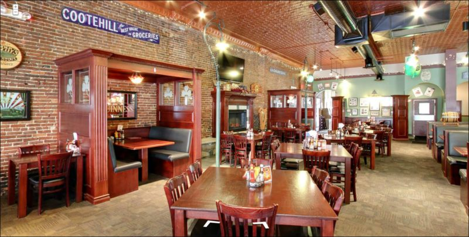

About Lynch's
Source: tripadvisor.com Source: bluewater.org
{kind=link}
{kind=link}
4.5 Stars
Irish restaurant, includes booth seating and a bar. They have karaoke on Wednesdays, and serve happy hour food. A lively and comfortable place to eat- or drink- with friends, family, or whoever you'd like.
Menu: lynchsirishtavern.com/menu
Hours:
Monday:
Closed
Tuesday - Saturday:
11:00 am - 2:00 am
Sunday:
11:00 am - 12:00 am
Reviews
"Nice atmosphere pub with great selection of beers and cocktails. They have karaoke on Wednesday. Soups and food are very tasty"
- Luis Villahermosa, 3 months ago, 5 stars
"Always a great time. Sat at the bar ordered the late night food menu. Got scotch eggs and fried corned beef egg rolls both tasted like heaven! Bartenders are super professional and the ambiance is always welcoming. Can't wait to come back! Amazing food amazing service!"
- Laura H, 7 months ago, 5 stars
Contact
| Website: | lynchsirishtavern.com |
|---|---|
| Address: | 210 Huron Avenue, Port Huron MI 48079, USA |
| Phone: | (810) 824-4021 |